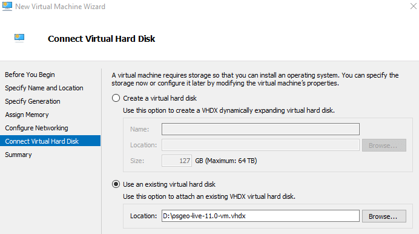

Egy Hyper-V virtuális gép futtatása¶
Ez a gyorstalpaló írja le hogyan futtassuk az OSGeoLive-ot a Hyper-V, a Microsoft virtualizásiós szoftverében. Egy másik megoldáshoz kövesse a linket a Lásd még fejezet ben lentebb. A Hyper-V a Windows Server és a Windows 10 Professional rendszerekben érhető el - nem része a Windows Home verziónak.
A virtuális gép használatának előnyei ugyanazok, melyeket a Egy virtuális gép futtatása-ban kiemeltünk. Sajnos a Virtual Box és a Hyper-V nem futtatható párhuzamosan. Ez két lehetőséget hagy - a Hyper-V letiltása vagy egy új Hyper-V gép konfigurálása az OSGeoLive futtatásához. Egy szabad eszköz hypervswitch <https://unclassified.software/en/apps/hypervswitch>`_ használható a Hyper-V gyors engedélyezéséhez és letiltásához - bár ez egy újraindítást igényel a beállítás minden módosítása után. Az oldal további része az OSGeoLive Hyper-V-n futtatását dokumentálja.
Rendszer követelmények¶
A Hyper-V követelmények itt találhatók. Ez a link információt tartalmaz a gép kompatibilitásnak ellenőrzéséről a systeminfo paranccsal. Összefoglalóan a gazda gépnek a következő hardver feltételeknek kell megfelelnie:
RAM: 4 GB minimum
64-bit Processor
Letöltések és virtuális gép konverzió¶
Töltse le az OSGeoLive VirtualBox virtuális lemezt (vmdk) a következő link live.osgeo.org-ről. A letöltés után tömörítse ki a letöltött fájlt (a 7zip használatával).
A Hyper-V virtuális gép formátuma eltér a letöltött VrtualBox-tól. Ezért a fájlt a vmdk formátumból vhdx-ba kell konvertálni. Jelenleg két konvertálási lehetőség van.
StarWind V2V konventer¶
Használja a StarWind V2V Converter programot. Egy egyszerű felhasználói felülete van, megengedi az osgeo-live-XX.X-vm.vmdk fájl kiválasztását és a Microsoft VHDX képbe konvertálását.
Microsoft Virtual Machine Converter 3.0¶
A második, komplikáltabb lehetőség a következő.
Töltse le a Microsoft Virtual Machine Converter 3.0-t és telepítse.
Töltse le a DS File Ops Kit-et és tömörítse ki.
Nyissa meg a PowerShell-t (adminisztrátori jogokkal)
Futtassa a következő parancsot az OSGeoLive vmdk lemez leírójának beszerzéséhez. Ez elmenti a lemez leírót a descriptor1.txt” fájlba.
Nyissa meg ezt egy szövegszerkesztőben (pl. Jegyzettömb) és kommentezze ki a következő sorokat a dupla-kereszt használatával (ezek a metaadatok VirtualBox specifikusak és a konverter nem is meri fel őket)
#ddb.uuid.image="0247ca9d-f9aa-4910-9e8c-1c14d83a7749" #ddb.uuid.parent="00000000-0000-0000-0000-000000000000" #ddb.uuid.modification="81a1d704-3e4a-443d-a5ca-2fd085ba086a" #ddb.uuid.parentmodification="00000000-0000-0000-0000-000000000000" #ddb.comment=""
Futtassa a következő parancsot a lemez leíró visszaillesztéséhez a
vmdkfájlba:D:\tools\dsfi.exe .\osgeo-live-11.0-vm.vmdk 512 1024 descriptor1.txt
Megjegyzés
A fenti lépések kihagyása egy hibát eredményez „ConvertTo-MvmcVirtualHardDisk : The entry 0247ca9d-f9aa-4910-9e8c-1c14d83a7749 is not a supported disk database entry for the descriptor.”
Végül futtassa a konvertálást:
Import-Module "C:\Program Files\Microsoft Virtual Machine Converter\MvmcCmdlet.psd1" cd D:\osgeo-live-11.0-vm ConvertTo-MvmcVirtualHardDisk -SourceLiteralPath .\osgeo-live-11.0-vm.vmdk -VhdFormat Vhdx
Útmutató¶
Ez at útmutató feltételezi, hogy a Hyper-V-t telepítette és engedélyezte. Ha nem ez az eset, akkor tipikusabb megoldás a Egy virtuális gép futtatása-ban leírt Virtua Box használata.
Egy virtuális gép létrehozása
Indítsa el a Hyper-V Manager alkalmazást és az Actions alatt válassza a New > Virtual Machine-t és utána Next. Majd adja meg a virtuális gép nevét.

Válassza a „Generation 1”-et a Specify Generation beállítások közül.

A memória hozzárendelésnél kiválaszthatja a „Use Dynamic Memory for this virtual machine”-t.
Ha szüksége van, hogy a virtuális gép elérje az internetet, akkor ezt be kell állítania „Configure Networking” képernyőn.
„Connect Virtual Hard Disk” lapon válassza a „Use an existing virtual hard disk”-et és válassza ki az előbb kitömörített
.vhdxfájlt.

Virtuális gép futtatás
Válassza ki a virtuális gépet a Virtuális gépek listából
Jobb kattintás és válassza a „Connect”et. A rendszer rákérdez a gép elindítására és egy új „Virtual Machine Connection” ablak nyílik meg.